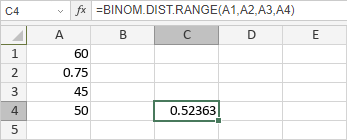

BINOM.DIST.RANGE funkcija
Funkcija BINOM.DIST.RANGE je jedna od statističkih funkcija. Koristi se za vraćanje verovatnoće rezultata pokušaja korišćenjem binomne raspodele.
Sintaksa
BINOM.DIST.RANGE(trials, probability_s, number_s, [number_s2])
Funkcija BINOM.DIST.RANGE ima sledeće argumente:
| Argument | Opis |
|---|---|
| trials | Broj pokušaja, numerička vrednost veća ili jednaka number_s. |
| probability | Verovatnoća uspeha u svakom pokušaju, numerička vrednost veća ili jednaka 0, ali manja ili jednaka 1. |
| number_s | Minimalan broj uspeha u pokušajima za koje želite da izračunate verovatnoću, numerička vrednost veća ili jednaka 0. |
| number_s2 | Opcioni argument. Maksimalan broj uspeha u pokušajima za koje želite da izračunate verovatnoću, numerička vrednost veća od number_s i manja ili jednaka trials. |
Napomene
Kako primeniti funkciju BINOM.DIST.RANGE.
Primeri
Slika ispod prikazuje rezultat koji vraća funkcija BINOM.DIST.RANGE.
